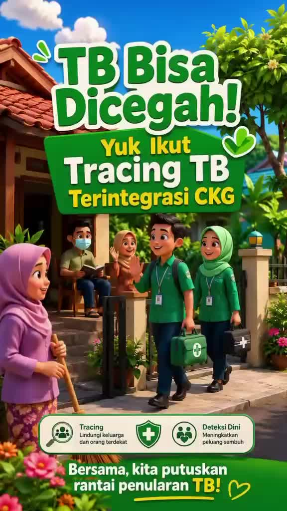
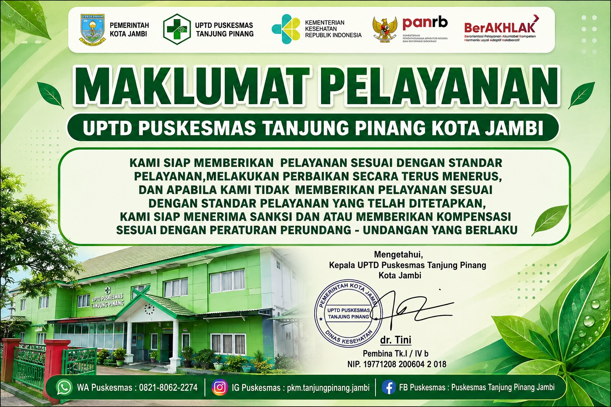
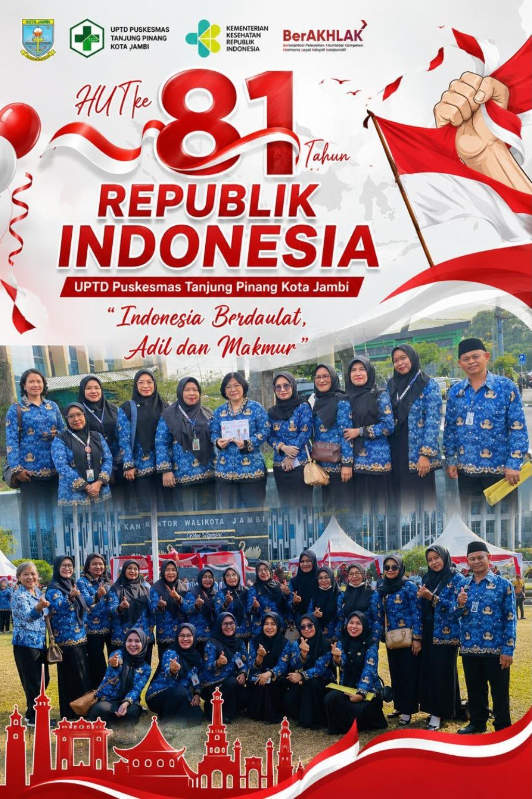
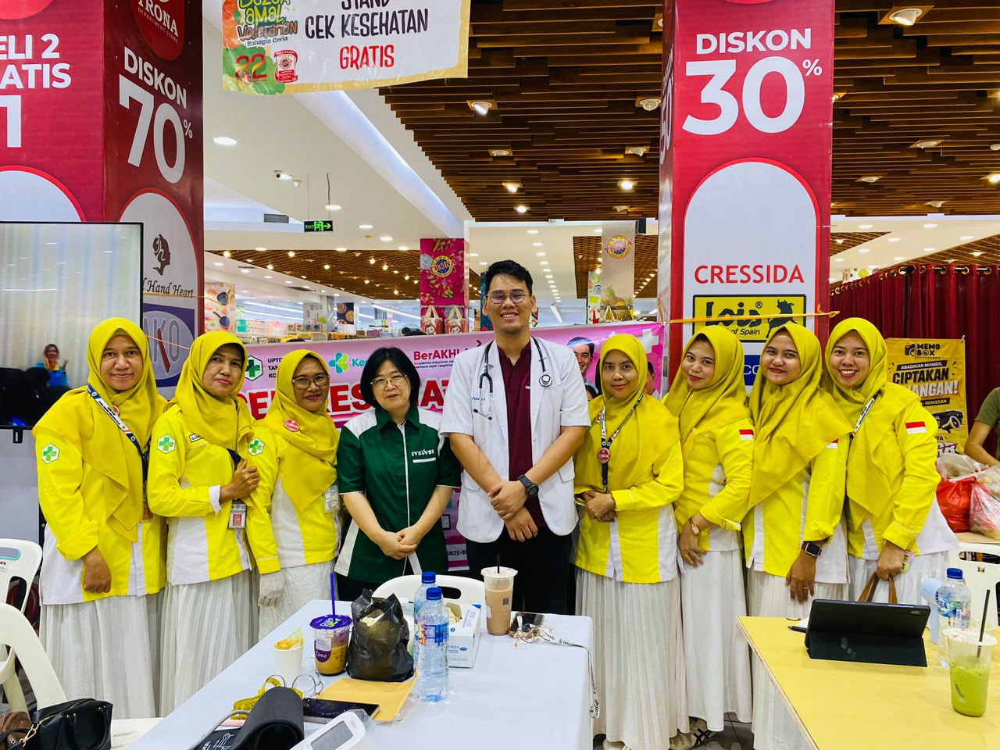
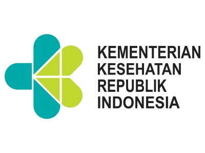
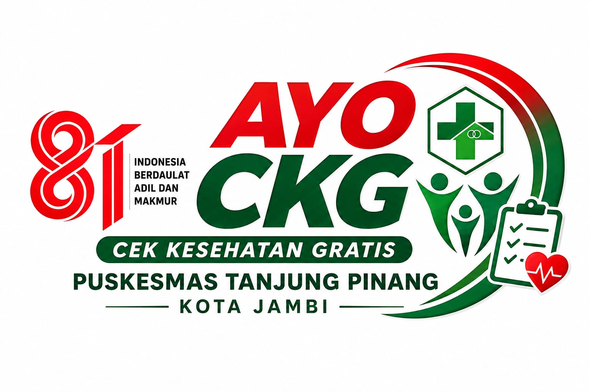
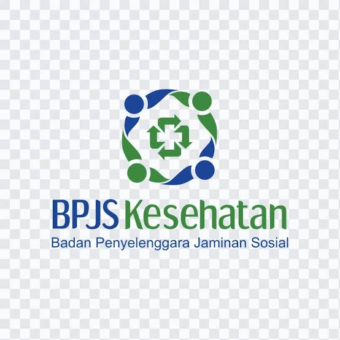
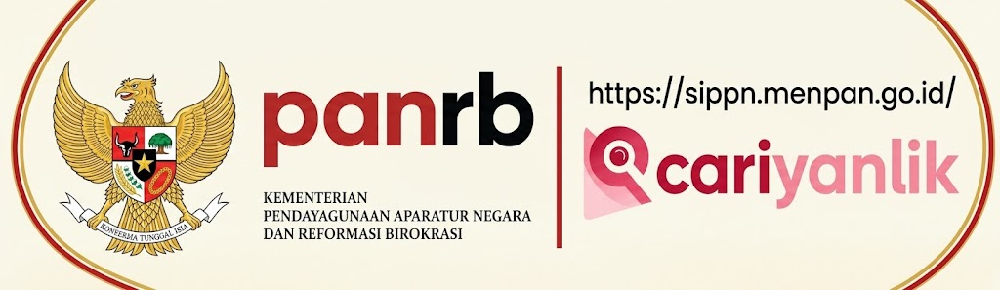

Pelayanan umum
Pemeriksaan dan pelayanan kesehatan dasar sesuai kebutuhan masyarakat.
UPTD Puskesmas Tanjung Pinang berkomitmen memberikan pelayanan kesehatan yang mudah diakses, aman, ramah, dan profesional untuk mewujudkan masyarakat yang sehat dan bahagia.



Maklumat pelayanan publik UPTD Puskesmas Tanjung Pinang Kota Jambi.


Daftar lengkap dan susunan 5 klaster tersedia pada halaman Pelayanan.
Pemeriksaan dan pelayanan kesehatan dasar sesuai kebutuhan masyarakat.
Pelayanan kesehatan ibu, bayi, balita, anak prasekolah, sekolah, dan remaja.
Pelayanan kesehatan gigi dan mulut sebagai bagian dari layanan lintas klaster.
Pemeriksaan laboratorium untuk mendukung pelayanan dan penegakan diagnosis.
Pelayanan dan penanganan awal kondisi kegawatdaruratan.
Pelayanan kefarmasian dan pengelolaan obat sesuai ketentuan yang berlaku.
Tonton informasi dan kegiatan terbaru langsung dari kanal YouTube resmi kami.
Akses cepat menuju portal layanan pemerintah dan lembaga terkait untuk informasi, layanan, dan pengaduan masyarakat.

RENBUT
Ayo CKG
Skrining BPJS Skrining riwayat kesehatan sebagai langkah awal deteksi risiko. Kunjungi → BPJS
SIPPN